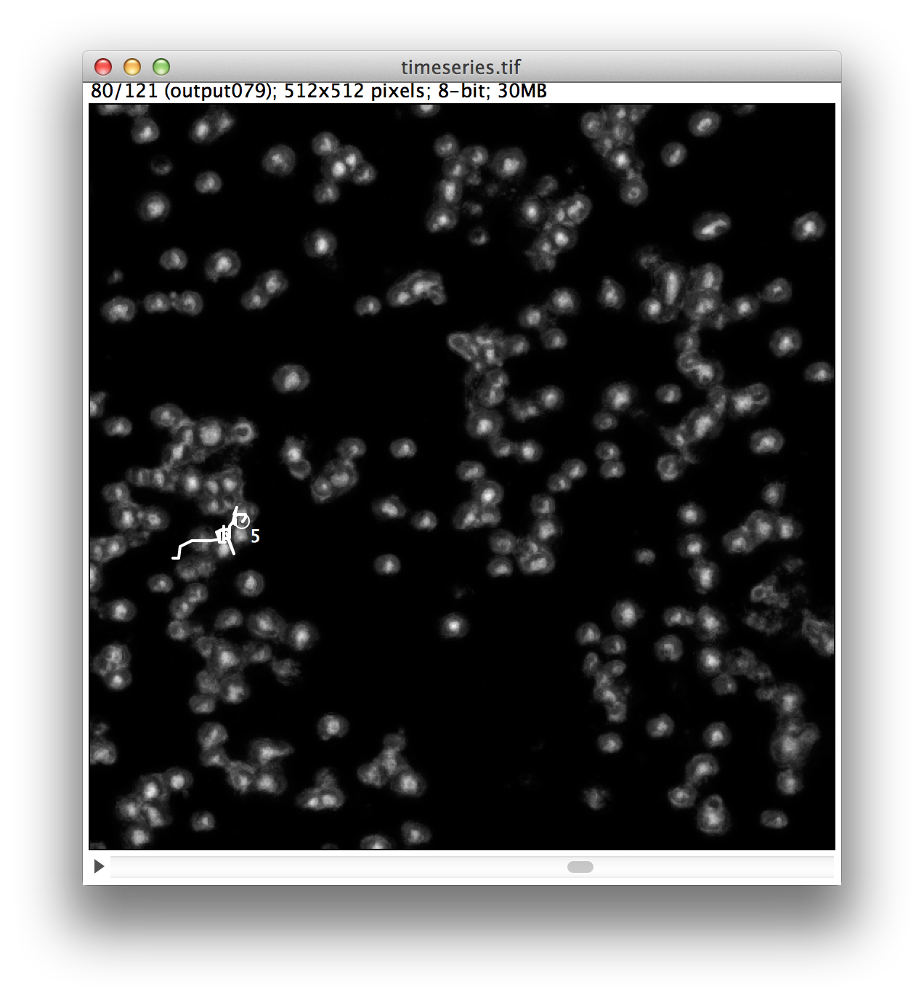
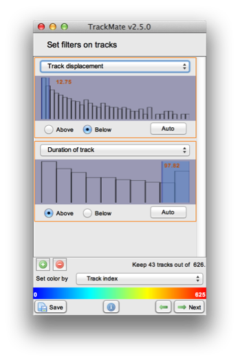

Fiji MtrackJ plugin (Plugins->Tracking->MTrackJ) allows you to track the movement of cells from one image frame to the next manually. With this plugin open goto to the first frame of your movie: 'timeseries.tiff'. Click 'Add' on the MTrackJ control panel and then click on the cell in each frame following its movement until you get to the end of the image-sequence. Press 'ESc' key on keyboard and then repeat for another cell. Do this for at least one cell from the start to the end of the sequence. Once complete press the 'Measure' button on the MTrackJ control panel. Find the 'results' table window and admire the statistics available.
Question) Take a screenshot of one of your finished tracks. What was the mean movement in pixels of your track/tracks?
Now we are going to try and track the cells from one frame to the next using the TrackMate plugin (Plugins->Tracking->TrackMate). This is a complex plugin with many options. It should allow detection and tracking of the objects within the image-sequence: 'timeseries.tiff'.
The first menu which has calibration settings can be skipped by clicking 'Next'. Select from the 'Select a detector' dialog the 'Log detector'. This detector is good at detecting blobs and so for finding our cells. Click 'Next' button and set the 'Estimated blob diameter' to '10.0' and the 'Threshold' to '0.0'. Click 'Next' button and the detection will process, once it is complete click 'Next' once again. For the 'Initial Thresholding' section select 'Auto', this makes sure that only the best signals are included as cells in the tracking. Click 'Next' button to proceed to the 'Select a view' section, click 'HyperStack' Displayer from the drop-down list and then click 'Next' again. Skip the filters section and move to the 'Select a Tracker' section. Select 'LAP tracker' from the drop-down list. The plugin has now detected the cells (or blobs) in each image but has not yet joined up the blobs to form tracks. The tracks algorithm performs this operation. Once selected click 'Next' and accept the parameters (Linking max distance: 15, Gap-closing max distance:15, and Gap closing max frame gap:2). Click 'Next' and your tracks should appear on the image. Filter the tracks as follows:
Using these settings you should see how many tracks have been retained after filtering (43 in this case). By using a low band-width 'Track displacement filter' and a long band-width 'Duration of Track filter' we can filter out noisy track data and again estimate how many cells were stationary. If you have time, experiment with the settings and see if you can better isolate the slower moving objects in the scene.
Question) Take a screenshot of your image sequence with all the tracks to show your result.
(c) Dominic Waithe 2014. University of Oxford.